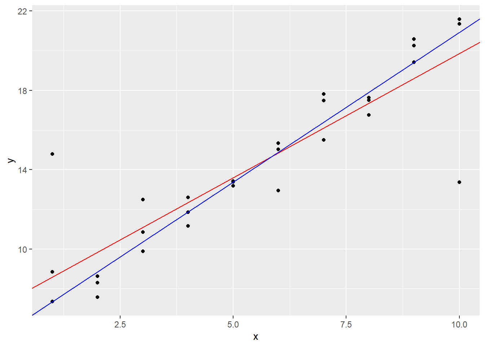

Capítulo 18 O básico de modelos com modelr
Neste capítulo, utilizaremos o pacote modelr:
18.2 Um modelo simples
Exercício 18.2.1
A desvantagem do modelo linear é que ele é sensível a valores incomuns, porque a distância incorpora um termo quadrado. Encaixe um modelo linear nos seguintes dados simulados e viualize os resultados. Reexecute algumas vezes para gerar diferentes conjuntos de dados simulados. O que você nota sobre o modelo?
Solução.
data <- function(i) {
tibble(
x = rep(1:10, each = 3),
y = x * 1.5 + 6 + rt(length(x), df = 2),
.id = i
)
}
models <- map_df(1:12, data)
ggplot(models, aes(x, y)) +
geom_point() +
geom_smooth(method = "lm", color = "red", se = FALSE) +
facet_wrap(~.id, ncol = 4)## `geom_smooth()` using formula = 'y ~ x'
Exercício 18.2.2
Uma maneira de tornar os modelos lineares mais robustos é usar uma medida de distância diferente. Por exemplo, em vez de distância da raiz quadrática média, você poderia usar a distância média absoluta:
measure_distance <- function(mod, data) {
diff <- data$y - make_prediction(mod, data)
mean(abs(diff))
}Use optim() para ajustar esse modelo nos dados previamente simulados e compare-o ao modelo linear.
Solução. Inicialmente, vamos reescrever as duas distancias e construir os modelos lineares.
# Definindo a distância baseada no erro quadrático médio
erro_quadratico_medio <- function(mod, data) {
diff <- data$y - (mod[1] + data$x * mod[2])
sqrt(mean(diff ^ 2))
}
# Definindo a distância baseada na média da distãncia absoluta
distancia_media_absoluta <- function(mod, data) {
diff <- data$y - make_prediction(mod, data)
mean(abs(diff))
}
# Definindo a função auxiliar
make_prediction <- function(mod, data) {
mod[1] + mod[2] * data$x
}
# Gerando o modelo otimizado
modelo_erro_quadratico_medio <- optim(c(0,0), erro_quadratico_medio, data = sim1a)
modelo_distancia_media_absoluta <- optim(c(0,0), distancia_media_absoluta, data = sim1a)Agora iremos plotar cada um dos modelos junto aos dados, para que possamos compará-los visualmente.
ggplot(sim1a, aes(x,y)) +
geom_point() +
geom_abline(aes(intercept = modelo_erro_quadratico_medio$par[[1]], slope = modelo_erro_quadratico_medio$par[[2]]), color = "red") +
geom_abline(aes(intercept = modelo_distancia_media_absoluta$par[[1]], slope = modelo_distancia_media_absoluta$par[[2]]), color = "blue")
A diferença é visível no gráfico, contudo ainda nos parece difícil dizer qual das duas curvas se adequa melhor. Poderíamos tentar compara a variável value em cada modelo, mas vale ressaltar que, como foram construídas com base em cálculos diferentes de distância, os valores não nos parecem comparáveis.
18.3 Visualizando modelos
Exercício 18.3.1
Em vez de usar lm() para ajustar uma linha reta, você pode usar loess() para ajustar uma curva suave. Repita o processo de ajuste de modelos, geração de grade, previsões e visualização em sim1 usando loess(), em vez de lm(). Como o resultado se compara a geom_smooth()?
Solução. Inicialmente vamos ajustar o modelo e construir um novo data frame contendo, além dos dados, a predição e o resíduo.
modelo_loess <- loess(y ~ x, sim1)
dados_ajustados <- sim1 %>%
add_predictions(modelo_loess) %>%
add_residuals(modelo_loess)Na sequência vamos plotar o gráfico com os dados e o resultado da predição:
E também os dados junto à geom_smooth():
## `geom_smooth()` using formula = 'y ~ x'Notamos que não há diferença entre o modelo ajustado pela função loess() e o gerado pela geom_smooth().
Agora plotaremos os residuos:
Como não identificamos um padrão para os resíduos, podemos entender que o modelo é útil para explicar o comportamento dos dados, isto é, parece explicar o máximo possível dos dados, deixando o menor resíduo possível.
Exercício 18.3.2
add_preditions() é pareado com gather_predictions() e spread_predictions(). Como essas três funções diferem?
Solução. Enquanto a função add_predictions() trabalha apenas com um modelo por vez, as funções spread_predictions() e gather_predictions() conseguem trabalhar com uma lista de modelos, facilitando a comparação entre diversos modelos.
Exercício 18.3.3
O que geom_ref_line() faz? De qual pacote ela vem? Por que exibir uma linha de referência em gráficos mostrando resíduos é útil e importante?
Solução. Esta função é uma otimização das funções geom_hline() e geom_vline() que desenham linhas horizontais e verticais, respectivamente, num gráfico. Ela está definida no pacote mdelr e é bastante útil porque nos permite desenhar uma referência para os resíduos.
18.4 Fórmulas e famílias de modelos
Exercício 18.4.1
O que acontece se você repetir a análise de sim2 usando um modelo sem uma intersecção? O que acontece com a equação do modelo? E com as previsões?
Solução. Para executar o modelo sem a intersecção, precisamos adicionar - 1 ou + 0 à nossa fórmula.
mod2 <- lm(y ~ x, data = sim2)
mod2a <- lm(y ~ x - 1, data = sim2)
sim2 %>%
data_grid(x) %>%
spread_predictions(mod2, mod2a)## # A tibble: 4 × 3
## x mod2 mod2a
## <chr> <dbl> <dbl>
## 1 a 1.15 1.15
## 2 b 8.12 8.12
## 3 c 6.13 6.13
## 4 d 1.91 1.91Neste caso, não temos mudanças nos valores das predições. (Por quê?)
Exercício 18.4.2
Use model_matrix() para explorar as equações geradas para os modelos que eu ajustei em sim3 e sim4. Por que * é um bom atalho para cada interação?
Solução. Para começar, vamos gerar as equações para esses doisa datasets:
Agora vamos visualizar x3, lembrando que o conjunto sim3 contém uma variável categórica e uma contínua:
## # A tibble: 120 × 8
## `(Intercept)` x1 x2b
## <dbl> <dbl> <dbl>
## 1 1 1 0
## 2 1 1 0
## 3 1 1 0
## 4 1 1 1
## 5 1 1 1
## 6 1 1 1
## 7 1 1 0
## 8 1 1 0
## 9 1 1 0
## 10 1 1 0
## # ℹ 110 more rows
## # ℹ 5 more variables:
## # x2c <dbl>, x2d <dbl>,
## # `x1:x2b` <dbl>,
## # `x1:x2c` <dbl>, …Podemos notar que foram criadas as variáveis x2* correspondentes aos valores de x2 (exceto para a categoria a, que é o complemento do conjunto). Também foram criadas as colunas x1:x2* que corresponde ao produto das colunas x1 e x2*. Podemos confirmar isso usando o seguinte:
## [1] TRUE## [1] TRUE## [1] TRUEAgora avaliaremos o caso do conjunto sim4:
## # A tibble: 300 × 4
## `(Intercept)` x1 x2
## <dbl> <dbl> <dbl>
## 1 1 -1 -1
## 2 1 -1 -1
## 3 1 -1 -1
## 4 1 -1 -0.778
## 5 1 -1 -0.778
## 6 1 -1 -0.778
## 7 1 -1 -0.556
## 8 1 -1 -0.556
## 9 1 -1 -0.556
## 10 1 -1 -0.333
## # ℹ 290 more rows
## # ℹ 1 more variable:
## # `x1:x2` <dbl>Como ambas as variiáveis são contínuas, nenhuma delas precisou ser quebrada. O modelo gerou a coluna x1:x2 como o produto de x1 por x2. O que confirmamos assim:
## [1] TRUEUtilizar o * é útil quando desejamos considerar no modelo o efeito da interação entre duas ou mais variáveis.
Exercício 18.4.3
Usando os princípios básicos, converta em funções as fórmulas nos dois modelos a seguir. (Dica: comece convertendo a variável categórica em variáveis 0-1)
mod1 <- lm(y ~ x1 + x2, data = sim3)
mod2 <- lm(y ~ x1 * x2, data = sim3)Solução. x
Exercício 18.4.4
Para sim4, qual é melhor, mod1 ou mod2? Acredito que mod2 faz um trabalho levemente melhor removendo padrões, mas é bem sutil. Você consegue criar um gráfico que suporte minha afirmação?
Solução. Inicialmente vamos construir os dois modelos (note que ambos usam a mesma métrica para cálculo do resíduo, dessa forma, poderemos compará-los).
Agora, para avaliar os modelos, vamos dar uma olhada nos resíduos.
residuos <- sim4 %>%
gather_residuals(mod1, mod2)
residuos %>%
ggplot(aes(resid, color = model)) +
geom_freqpoly(binwidth = 0.5)Para ambos os modelos, vemos que os resícuos se concentram em torno de zero. Isso nos ajuda a ver que ambos os modelos são úteis, mas não nos ajuda na comparação entre eles. Vamos adicionar mais uma camada ao gráfico para tentar visualizar melhor.
O gráfico ainda não é muito explicativo, mas conseguimos visualizar uma pequena diferença: a calda de mod1 parece ser um pouco mais longa, isto é, o modelo possui resíduos mais extremos, se comparado ao mod2.
Vamos visualizar também o valor absoluto dos resíduos:
A tendência ainda se mantém. Indicando que mod2 é levemente melhor do que mod1. Vamos verificar ainda o desvio padrão dos resíduos de cada modelo:
## # A tibble: 2 × 3
## model mean sd
## <chr> <dbl> <dbl>
## 1 mod1 1.85e-16 2.10
## 2 mod2 1.32e-16 2.07Notamos que, apesar de pequena, existe uma diferença entre os modelos e mod2 realmente gera um resíduo menor, ou seja, ele é um pouco melhor do que seu “adversário”.